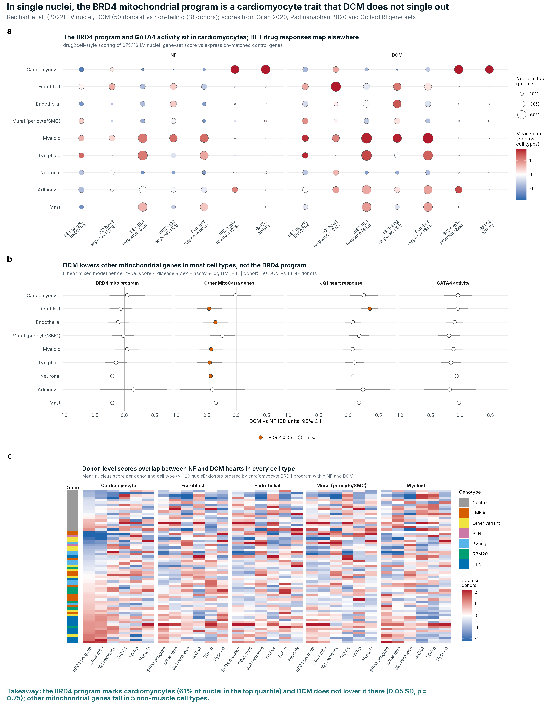
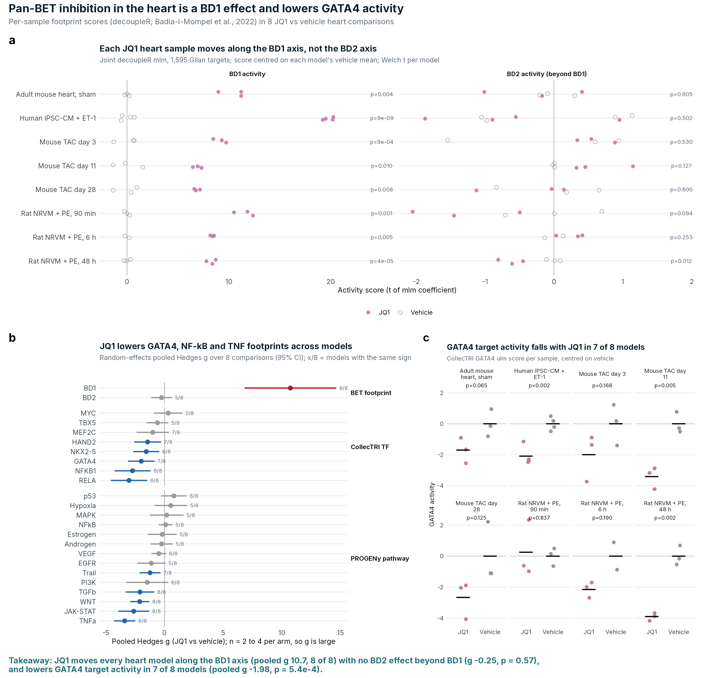
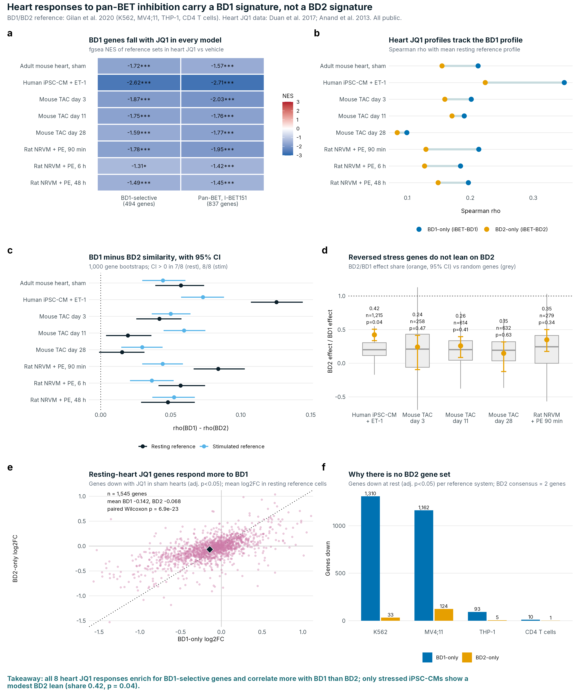
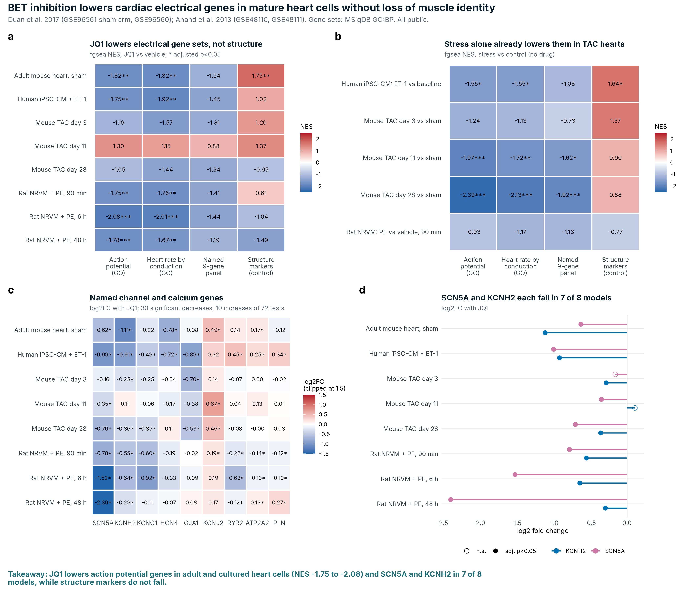
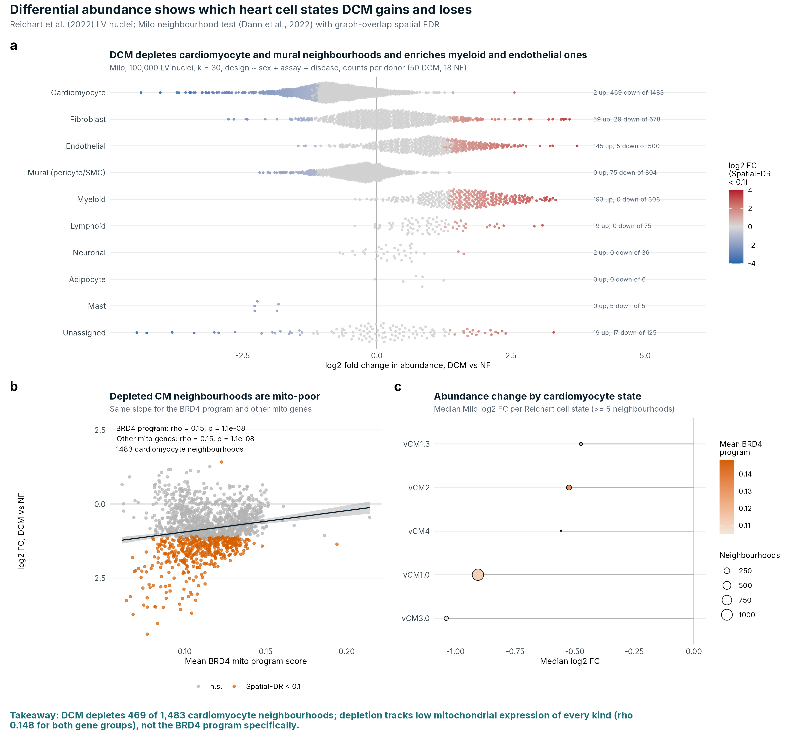
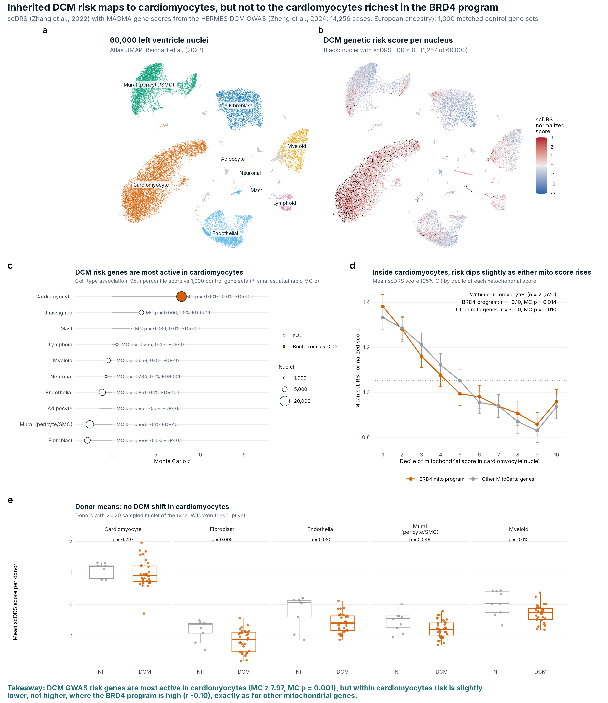
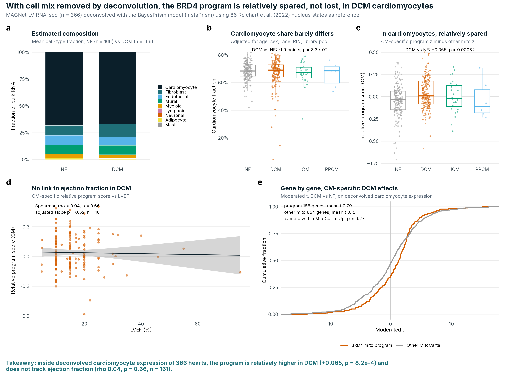
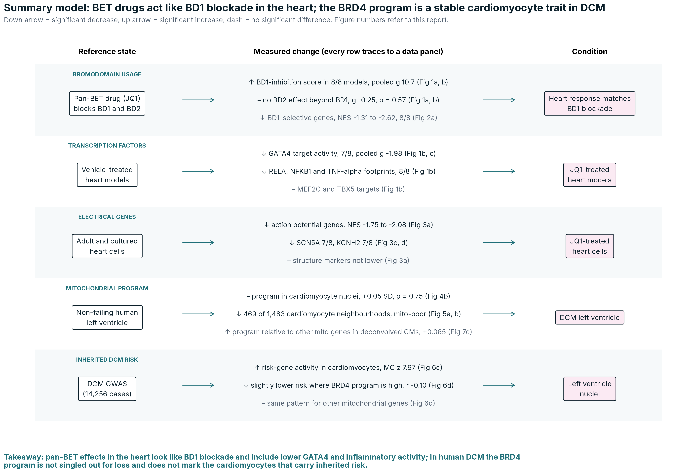

Pan-BET drugs act like BD1 blockade in the heart, and the BRD4 mitochondrial program is a stable cardiomyocyte trait in human DCM
Our BRD4 work for your lab: an overview of the integration reports already shared with you, and a new public-data reanalysis built around your BRD4 program, with per-sample transcription factor and bromodomain footprints, single-nucleus statistics on 375,118 heart nuclei, deconvolution of 366 human hearts, and DCM genetics mapped to single cells.
Built by Artemis Biolabs from public GEO, CELLxGENE and GWAS data and your published 2020 Circulation supplement. No unpublished lab data appear on this page. Analysis for discussion; not peer reviewed.
All reports Public-data findings Read the report (PDF)
Which BET functions does the heart rely on, and is the BRD4-GATA4 program lost in human failure?
Your lab and the BET field
- BRD4 partners with GATA4 to keep mitochondrial genes on in adult cardiomyocytes (Padmanabhan et al., Circulation 2020).
- JQ1 blunts pathological gene programs in pressure overload (Anand et al., Cell 2013; Duan et al., Sci Transl Med 2017).
- BD1 holds steady-state transcription and BD2 matters more for induced genes in blood and cancer cells (Gilan et al., Science 2020).
Five tests on public data
- Does each JQ1-treated heart sample look like BD1 or BD2 blockade? BD1, 8 of 8, and GATA4 activity falls.
- Does BET inhibition lower electrical genes in mature heart cells? Yes, without loss of structure markers.
- Is the BRD4 program lost inside DCM cardiomyocytes? No (+0.05 SD, p = 0.75).
- Is it lost once the cell mix is removed? No; it is relatively higher (+0.065).
- Do DCM risk genes point to BRD4-high cells? No; risk sits in cardiomyocytes, not the BRD4-high ones.
BD1, not BD2; GATA4 down; electrical genes down; the BRD4 program kept in DCM
Every result comes from public data. Figures follow the Artemis figure book: a finding-sentence title, lettered panels, a Takeaway line and full legends in the report.
Each JQ1-treated heart sample moves along the BD1 axis, and GATA4 activity falls
new in v3, public dataA joint decoupleR model fitted BD1 and BD2 footprints in every sample. JQ1 raised BD1 activity over vehicle in all 8 comparisons (Welch p 8.9e-9 to 0.010; pooled g 10.7, 95% CI 6.8 to 14.6). BD2 beyond BD1 pooled to g -0.25 (p = 0.57). GATA4 target activity fell in 7 of 8 (pooled g -1.98, p = 5.4e-4), and RELA, NFKB1 and TNF-alpha footprints fell in 8 of 8.

Gene-set tests agree: heart JQ1 responses carry a BD1 signature
public dataA 494-gene BD1-selective set is enriched among JQ1-lowered genes in every heart model (NES -1.31 to -2.62), and each heart JQ1 profile matches the BD1-only profile better than the BD2-only profile (8 of 8). Only stressed iPSC-CMs lean modestly toward BD2 (share 0.42, p = 0.04).

JQ1 lowers electrical genes in adult and cultured heart cells
public dataThe GO cardiac action potential set falls with JQ1 in the healthy adult mouse heart (NES -1.82), stressed human iPSC-CMs (-1.75) and rat cardiomyocytes (-1.75 to -2.08). SCN5A and KCNH2 each fall in 7 of 8 comparisons. Structure markers do not fall.

In 375,118 nuclei, the BRD4 program is a cardiomyocyte trait that DCM does not single out
new in v3, public dataIn a drug2cell-style map, 61% of cardiomyocyte nuclei sit in the program's top quartile, against 4% or fewer in most other cell types. A donor mixed model found no DCM change in cardiomyocyte nuclei (+0.05 SD, 95% CI -0.24 to 0.34), while other mitochondrial genes fell in fibroblast, myeloid, lymphoid, neuronal and endothelial nuclei (FDR < 0.05).
DCM depletes mitochondria-rich cardiomyocyte states, not the BRD4 program in particular
new in v3, public dataMilo found 469 of 1,483 cardiomyocyte neighbourhoods depleted in DCM and myeloid and endothelial neighbourhoods enriched. Depletion tracked low mitochondrial expression equally for the BRD4 program and for other mitochondrial genes (rho 0.148 for both).

Inherited DCM risk maps to cardiomyocytes, but not to the BRD4-high ones
new in v3, public datascDRS with MAGMA genes from the HERMES DCM GWAS (14,256 cases) scored 60,000 nuclei. Cardiomyocytes were the only cell type associated after correction (MC z 7.97, MC p = 0.001). Within cardiomyocytes, risk was slightly lower where the program was high (r -0.10), the same as for other mitochondrial genes.

With the cell mix removed, the program is relatively spared in DCM cardiomyocytes
new in v3, public dataThe BayesPrism model (fitted with InstaPrism) deconvolved 366 MAGNet left ventricles with Reichart nucleus states as reference. In cardiomyocyte-specific expression the program rose relative to other mitochondrial genes in DCM (+0.065, p = 8.2e-4) and did not track ejection fraction (rho 0.04, p = 0.66, n = 161).

One model, every arrow traced to a panel
synthesisPan-BET effects in the heart look like BD1 blockade and include lower GATA4 and inflammatory activity. In human DCM the BRD4 program is not singled out for loss and does not mark the cardiomyocytes that carry inherited risk.

Any program gene or electrical gene, in one place
Type a gene. BRD4 program genes show the drop after Brd4 deletion in mouse and the change in deconvolved human DCM cardiomyocytes (366 MAGNet hearts). The 9 named electrical genes show log2 fold change with JQ1 in all 8 heart comparisons. Orange: significantly lower; blue: significantly higher (adjusted p < 0.05).
Read these first
- Reference cells are not heart cells. The BD1 and BD2 profiles come from human leukemia lines and CD4 T cells, and their weights correlate (r = 0.83), which limits how finely the two bromodomains can be split.
- Small arms, mixed platforms. Most heart arms have n = 2 to 4, so pooled effect sizes are imprecise. The TAC and rat cardiomyocyte data are microarrays.
- Mouse signature, human test. The mitochondrial program comes from mouse day 5 knockout tables mapped to human genes.
- Model estimates. Deconvolved cardiomyocyte expression is a model estimate from InstaPrism, a fast implementation of the BayesPrism model, not a measurement.
- Donors are the unit. Per-nucleus tests used Gaussian mixed models with donor as a random effect, so the effective sample is 68 donors. scDRS used 60,000 nuclei from 43 donors and a European-ancestry GWAS.
How this was built
Data
Anand et al. 2013 (GSE48110, GSE48111), Duan et al. 2017 (GSE96560, GSE96561), Gilan et al. 2020 (GSE138209, GSE138089), MAGNet (GSE141910, 366 left ventricles), Reichart et al. 2022 heart cell atlas (375,118 left ventricle nuclei, 68 donors), HERMES DCM GWAS (Zheng et al. 2024), MitoCarta3.0, and Padmanabhan et al. 2020 Supplemental Tables II and IV.
Per-sample footprints
decoupleR multivariate linear model with BD1 and BD2 fitted jointly on 1,595 Gilan targets; CollecTRI regulons (ulm) and PROGENy pathways (mlm); Welch tests per comparison and DerSimonian-Laird pooling of Hedges g (Badia-i-Mompel 2022; Müller-Dott 2023; Schubert 2018).
Single nuclei
Donor pseudobulk edgeR with camera (Squair 2021; Wu and Smyth 2012); drug2cell-style per-nucleus scores (Kanemaru 2023) with lme4 mixed models, donor as random effect; Milo differential abundance (Dann 2022).
Deconvolution
BayesPrism model (Chu 2022) fitted with InstaPrism (Hu and Chikina 2024) on 366 MAGNet hearts with 86 Reichart states as reference; limma-trend on cardiomyocyte-specific expression with age, sex, race, RIN and library pool; no cardiomyocyte content term.
Genetics
MAGMA v1.10 gene scores (de Leeuw 2015) from the HERMES DCM GWAS; scDRS 1.0.2 (Zhang 2022) with 1,000 matched control gene sets; Monte Carlo cell-type association and correlation with program scores.
Software
R with DESeq2, limma, edgeR, fgsea, lme4, lmerTest, miloR, InstaPrism; Python with decoupler 2.2.0, scanpy and scDRS; figures in ggplot2 and patchwork with the Okabe-Ito palette.
Every tool we ran, step by step
Only tools actually run appear here. The dashed orange step is the single-nucleus test that found no DCM loss of the program in cardiomyocytes. Click a step for its parameters, inputs and outputs.
From public data to direct tests
Each result points to a concrete next experiment for the BRD4 program.
Book a call logan@artemislabs.bio
Logan Beharry, Founder and CEO, Artemis Biolabs.